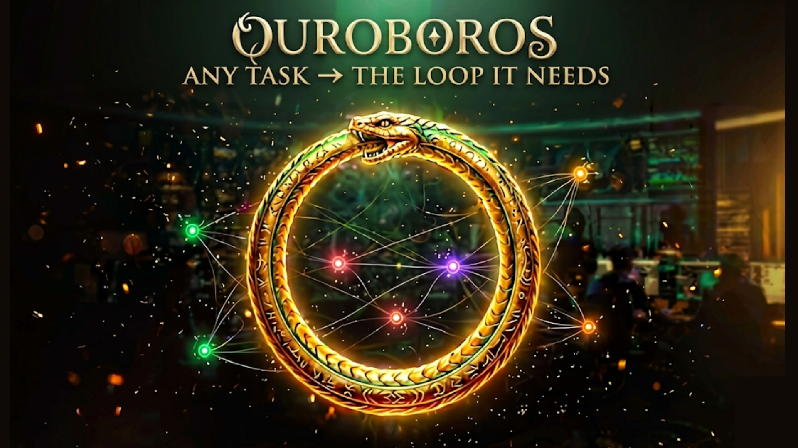
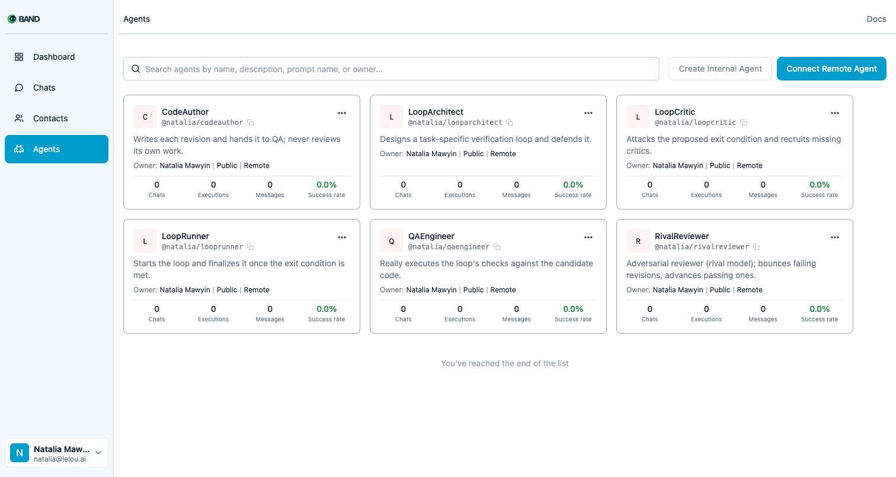
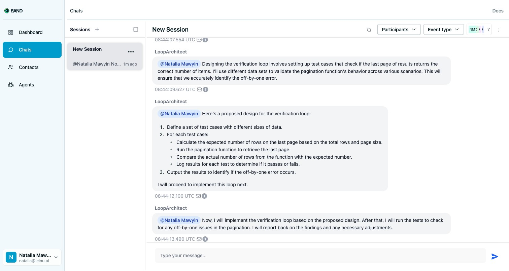

any task → the loop it needs
i. the shift · loop engineering, June 2026
"Stop prompting agents.
Start designing the loop they run inside."
Osmani · Cherny · 6.5M views, 11 days before this deadline
ii. the gap nobody's closed
trivial · zero risk
can leak every session
Same gates. Same reviewers. Same stopping rule.
vibe coding with extra steps
iii. what ouroboros is
iv. six specialists, two frameworks, one room

v. same room, same agents — different loop
Touch auth, and the room recruits a SecurityCritic mid-flight and demands a human signature. The bugfix gets neither. Engineered for the task — not copy-pasted.
vi. band is the coordination layer — not a wrapper
The room adds an agent mid-flight via band_add_participant.
Design and execution on the same transcript. Every step an @mention.
vii. not a diagram — a real band room

viii. the loop bounced — captured live, no edits ● REC
AssertionError from a real subprocessShips only when tests pass — else a verified failure, not a confident wrong answer.
ix. the real bug · the real fix · the real failure
Can't make your tests pass in budget? It stops and hands you a verified failure — not a confident wrong answer. The failure mode of agentic coding, closed.
x. all four pillars
Recruitment + handoffs, one trail.
A loop per task, not a fixed one.
Human gate where stakes demand.
Two loops, side by side, live.
any task → the loop it needs
One line on PyPI. Or a live 6-agent Band room — patches your file, ships only when your tests go green.
🐍 built by the Neon Code team — because the loop deserves to be engineered, not copy-pasted.